Динамическая инфографика
Ручная дуговая сварка 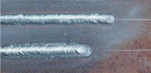
Типы сварных соединений 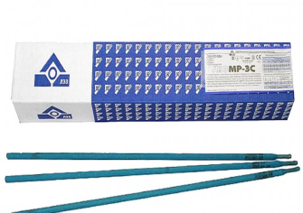
Выбор типа и марки электрода 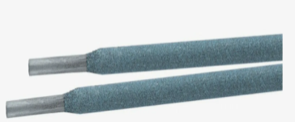
Выбор диаметра электрода
Определение силы сварочного тока 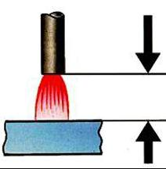
Длина дуги 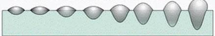
Скорость сварки и количество проходов 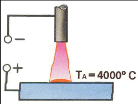
Род и полярность сварочного тока
Понятие ручная дуговая сварка
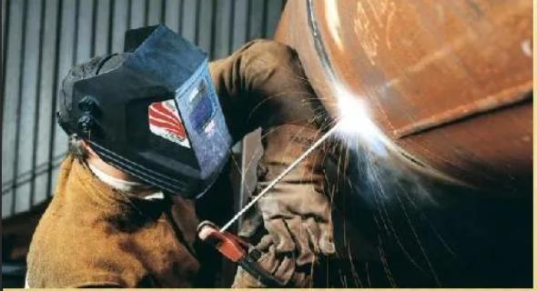
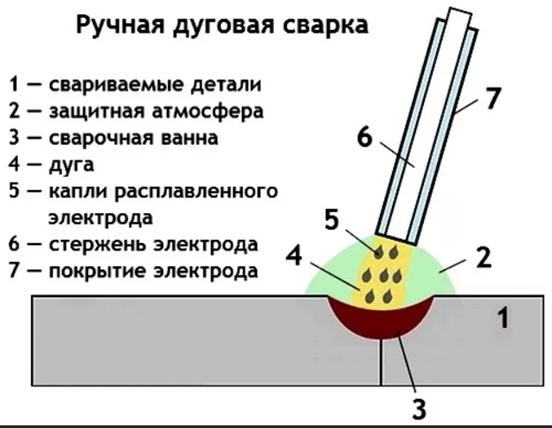
Ручная сварка выполняется человеком с помощью инструмента, получающего энергию от специального источника. Таким образом, можно сказать, что дуговая сварка — сварка плавлением, при которой нагрев осуществляется электрической дугой. Дуговую сварку плавящимся электродом выполняют электродом, который, расплавляясь при сварке, служит присадочным металлом. Суммируя эти три определения, можно сказать, что ручная дуговая сварка плавящимся электродом выполняется сварщиком с помощью инструмента, получающего энергию от специального источника; расплавляемый при сварке электрод, закрепленный в инструменте, служит присадочным металлом, вводимым в сварочную ванну в дополнение к расплавленному основному металлу. Этот вид сварки в настоящее время занимает по объему выполненных сварочных работ первое место в строительно-монтажном производстве. В настоящее время используют электроды со стержнями из проволоки определенного химического покрытия на электродо - обмазочных прессах специальной обмазкой, составленной из компонентов, предохраняющих расплавляемый дуговой металл от вредного влияния воздуха и обеспечивающих требуемый состав и механические свойства сварного соединения. Покрытие электрода, кроме того, улучшает стабильность горения дуги, расплавляемый металл покрывается шлаком и газами, образующимися при расплавлении покрытия и реагирующими с металлом. Разработано и изготовляется промышленностью большое количество покрытых электродов различных марок для ручной сварки сталей и цветных металлов. Для образования сварного соединения сварщик возбуждает дугу в месте будущего шва и поддерживает ее горение, расплавляя кромки основного металла
Типы сварных соединений. Сварные швы
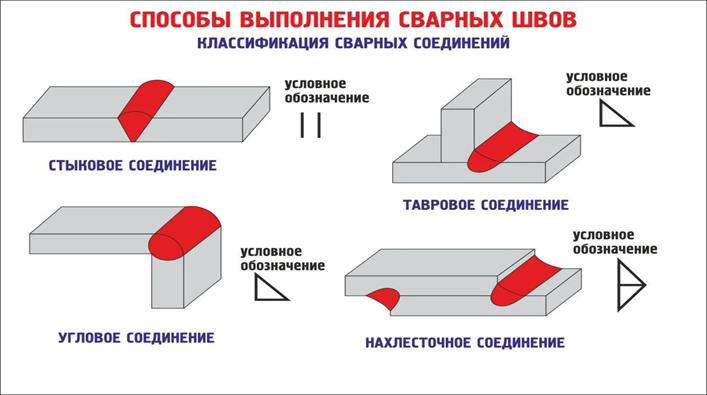
Термины и определения основных понятий по сварке металлов устанавливает ГОСТ 2601—84. Сварные соединения подразделяются на несколько типов, определяемых взаимным расположением свариваемых деталей. Основными из них являются стыковые, угловые, тавровые, нахлесточные и торцовые соединения. Для образования этих соединений и обеспечения требуемого качества должны быть заранее подготовлены кромки элементов конструкций, соединяемых сваркой. Форм подготовки кромок для ручной дуговой стали и сплавов на железоникелевой и никелевой основе установлены ГОСТ 5264—80.
Стыковым соединением называют соединение двух элементов, примыкающих друг к другу торцевыми поверхностями.
ГОСТ 5264—80 предусмотрено 32 типа стыковых соединений, условно обозначенных Cl , С2, С28 и т.д., имеющих различную подготовку кромок в зависимости от толщины, расположения свариваемых элементов, технологии сварки и наличия оборудования для обработки кромок. Угловым соединением называют соединение двух элементов, расположенных под углом и сваренных в месте примыкания их краев. Таких соединений на считывается 10: от У1 до У10.
Под режимом сварки понимают группу контролируемых параметров, определяющих её условие, обеспечивающих получение сварных соединений заданных размеров, формы и качества. Подразделяются на основные и дополнительные:
К основным относятся:
- сила сварочного тока (Iсв)
- напряжение на дуге (Uд)
- скорость сварки (Vсв)
- род тока (постоянный, переменный)
- полярность тока (обратная и прямая)
К дополнительным относятся:
- диаметр электрода (dэ)
- тип и марка электрода
- количество проходов
- толщина металла
При сварке металла большой толщины (более 25 мм), сталей повышенной прочности или сталей со специальными свойствами, кроме параметров режима сварки могут задаваться дополнительные технологические мероприятия (предварительный, послесварочный подогрев, термическая обработка деталей и др. мероприятия).
Выбор Типа и марки электрода
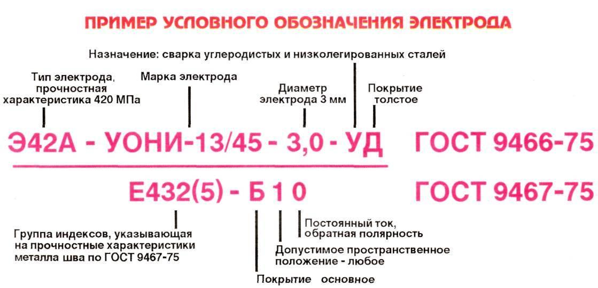
Выбор типа и марки электрода зависит от прочностных
характеристик и особых свойств свариваемой стали, толщины детали,
пространственного расположения шва, назначения конструкции, условия выполнения
сварочных работ (заводские, монтажные), жесткости конструкции, условия ее
эксплуатации, типа сварочных источников, которыми укомплектованы сварочные посты
и от других факторов (более подробно об этом см. ММА-201).
Выбор диаметра электрода
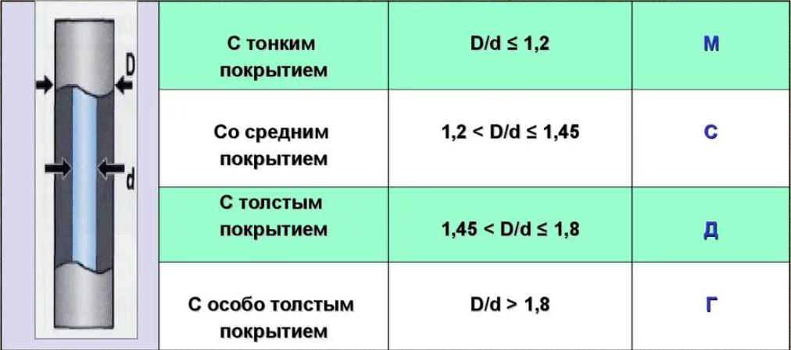
Выбор диаметра электрода производиться с учетом следующих характеристик сварного соединения:
- толщины свариваемого металла;
- вида прохода (корневой, заполняющий);
- положения шва в пространстве.
Определить диаметр электрода при выполнении сварки в нижнем положении, в зависимости от толщины свариваемого металла, Вам помогут данные, приведенные в таблице:
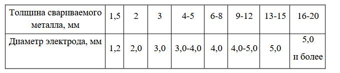
Применение электродов диаметром более 6 мм ограничивается вследствие необходимости использования большого сварочного тока и, соответственно, более тяжёлых электрододержателей и более толстых сварочных кабелей.
При выполнении угловых швов нахлесточных и тавровых соединений в нижнем положении диаметр электрода следует устанавливать в зависимости от катета шва.
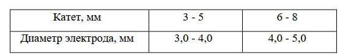
Корневой проход в многослойных стыковых и угловых швах для лучшего провара корня шва необходимо выполнять электродами диаметром не более 4 мм.
Сварку вертикальных швов рекомендуется выполнять электродами диаметром не более 4,0 мм; электроды диаметром 5,0 мм могут использоваться сварщиками высокой квалификации. Для сварки швов в потолочном положени используются электроды диаметром не более 4,0 мм.
Определение силы сварочного тока
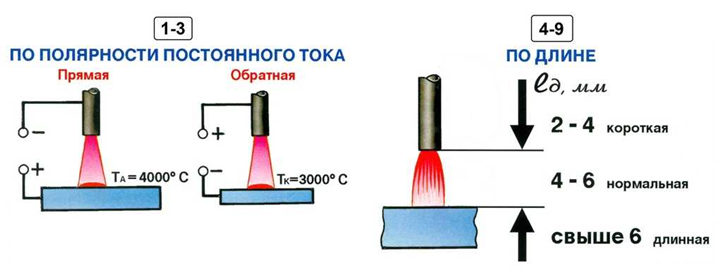
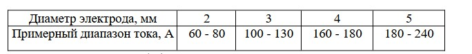
Величину сварочного тока (Iсв) устанавливают в зависимости от диаметра применяемого электрода с учетом конкретных условий сварки:
- положения шва в пространстве;
- типа покрытия электрода;
- толщины свариваемого металла и др.
Рекомендуемые диапазоны сварочных токов для конкретной марки и диаметра электродов, а также положения сварки указываются на заводской этикетке на упаковочной пачке электродов.
Слишком малый сварочный ток ведет к неустойчивому горению дуги, «примерзанию» электрода к основному металлу, непровару, нарушениям формирования шва.
Чрезмерно большой сварочный ток ведет к сильному нагреву электрода, растрескиванию обмазки, прожогам, повышенному разбрызгиванию электродного металла, ухудшению формирования, а также снижению прочностных и пластических характеристик сварного соединения.
При отсутствии заводской этикетки ориентировочные диапазоны рекомендуемого тока при сварке в нижнем положении электродами для углеродистых и низколегированных сталей Вы можете взять из таблицы ниже:
При сварке вертикальных и горизонтальных швов ток следует уменьшить, по сравнению с принятым для нижнего положения, примерно на 5 - 10%, для потолочных – на 10 - 15%.
Длина дуги
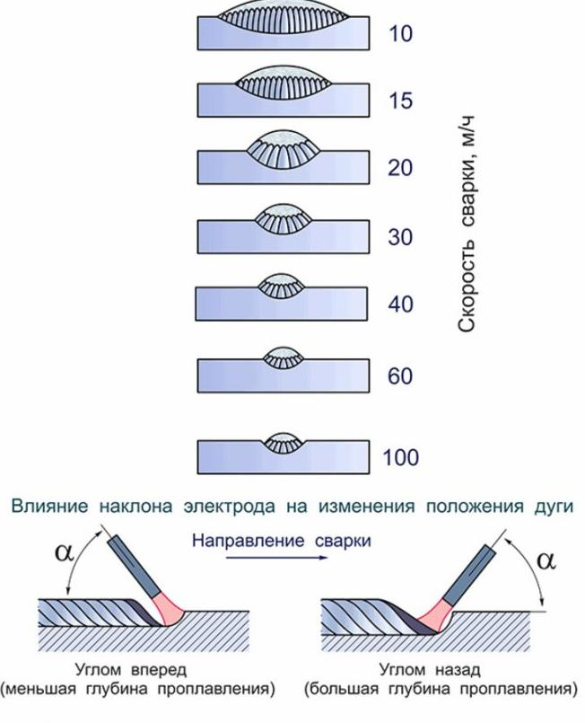
Длина дуги является важным параметром режима ручной дуговой сварки штучными электродами, который может существенно влиять на многие показатели сварочного процесса.
Умение поддерживать необходимую длину дуги в течение всего процесса сварки является одним из основных показателей высокой квалификации сварщика!
Короткая дуга (не более 0,5 – 1,5 dэ) обеспечивает получение высококачественного шва, так как при этом обеспечивается оптимальная газовая защита сварочной ванны, что препятствует окислению металла шва и его насыщению азотом из окружающего воздуха (насыщение расплавленного металла азотом может вызывать пористость).
Длинная дуга характеризуется неустойчивым горением, повышенным разбрызгиванием электродного металла, большим содержанием окислов в металле шва, при этом уменьшается глубина проплавления и ухудшается формирование шва, а также повышается вероятность образования пористости.
О длине дуги можно судить и по напряжению дуги, которое связано с ней прямо-пропорциональной зависимостью. Напряжение на дуге при сварке покрытыми электродами обычно находится в пределах 18 - 25 В.
Скорость сварки и количество проходов
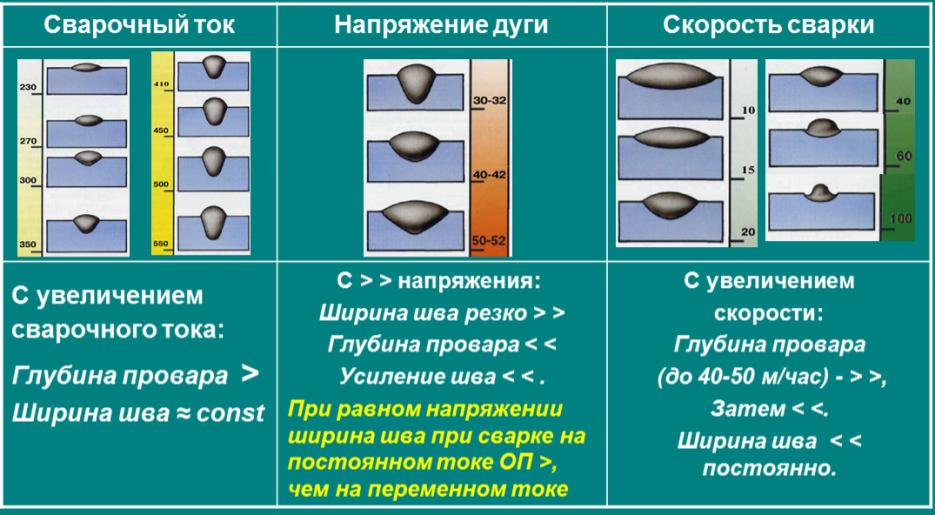
Скорость сварки и количество проходов устанавливаются самим сварщиком в зависимости от величины сварочного тока, типа сварного соединения, формы разделки кромок, положения шва в пространстве, марки стали свариваемых деталей и других условий.
Скорость сварки необходимо выбирать такую, при которой обеспечивается требуемая площадь поперечного сечения наплавляемого валика.
Для стыковых соединений с V-образной разделкой кромок, сварка которых выполняется в нижнем положении, ориентировочная толщина корневого и заполняющих проходов может составлять:
- корневой проход 3 … 5 мм;
- заполняющий проход не более 4 … 6 мм.
Подведем итоги
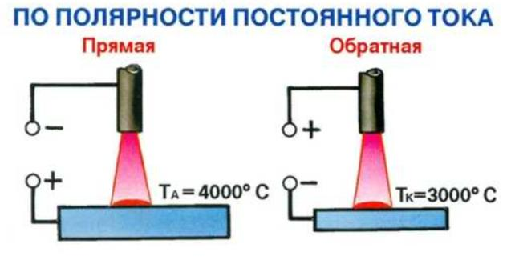
Различают два рода тока: переменный и постоянный. сварочная дуга может питаться как тем, так и другим родом тока.
варочная дуга переменного тока горит менее устойчиво, чем дуга постоянного тока. Поэтому сварку конструкций ответственного назначения из сталей повышенной прочности и сталей со специальными свойствами рекомендуется выполнять на постоянном токе.
Низкоуглеродистые и низколегированные конструкционные стали экономически более выгодно сваривать на переменном токе, так как используемые при этом источники питания (сварочные трансформаторы) являются более простыми по конструкции и более дешёвыми.
Ещё одно практическое преимущество процесса сварки дугой переменного тока заключаются в отсутствии магнитного дутья.
Полярность тока при использовании источников постоянного тока зависит от марки применяемых электродов и технологических особенностей процессов сварки на прямой и обратной полярности.
Рекомендуемая полярность тока для конкретной марки электрода указывается на заводской этикетке на упаковочной пачке электродов.